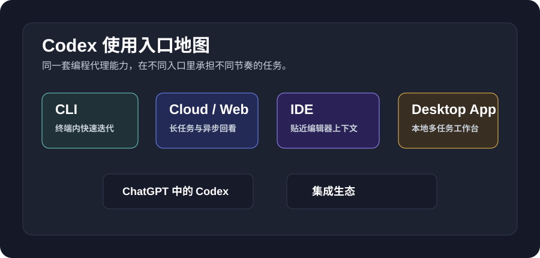
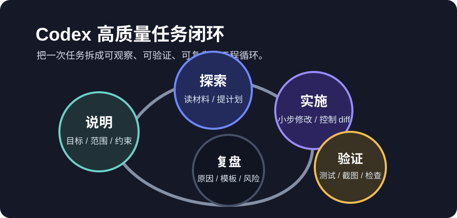
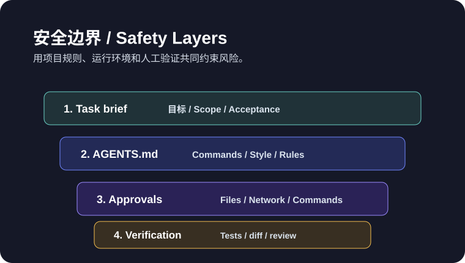

桌面 App 入门路径
从客户端打开到第一个任务，帮助新手先跑通完整闭环。
从客户端打开到第一个任务，帮助新手先跑通完整闭环。
覆盖本地仓库、命令执行、测试验证、提交说明和排障流程。
梳理 MCP、Skills、Subagents、浏览器和自动化能力的组合方式。
解释沙盒、审批、网络、凭据和团队使用时的边界设置。
用手机记录任务，再回到桌面端检查和交付。
收录 13 个可迁移案例，覆盖内容、资料、网页、支持和发布流程。
提供 AGENTS.md、任务模板、复盘结构和团队推广方法。
汇总配置文件、CLI 选项、常见错误和恢复路径。
它不是命令速查表，而是一份围绕真实工作流组织的实践指南。它帮助不同背景的人回答三个问题：从哪个入口开始，怎样把需求交给 Codex，怎样确认交付可靠。
从桌面 App、CLI、IDE 到 Cloud，按阶段建立完整使用习惯。
把 Codex 放进周报、表格、文档站、知识库、发布说明等真实场景。
覆盖 CLI 选项、config.toml、MCP/Skills/Subagents 与安全管理。
任务设计、非开发工作流、团队 playbook，帮助你把经验沉淀下来。
不同起点不需要读同一条路。先选与你当前工作最贴近的路径，再回头补全基础概念。
安装并熟悉桌面端，完成一个低风险任务。
适合初学者、运营、写作者在 CLI 或 IDE 中读项目、改代码、跑检查。
适合前端、后端、开源维护者用项目规则、权限边界和案例库统一协作方式。
适合技术负责人、内部工具负责人Codex 的能力会出现在 App、CLI、Cloud、IDE、ChatGPT 和集成生态里。入口不同，任务节奏也不同：本地小步修改适合 CLI，长任务和并行任务适合 Cloud，贴近编辑器的解释与局部改动适合 IDE，跨工具流程适合 App 和插件体系。

好用 Codex 的关键不是把 prompt 写得花哨，而是让它始终知道目标、范围、约束、验证方式和交付格式。

案例库不是展示清单，而是可改写的任务样本。你可以直接换成自己的项目、工具、账号和验证方式。

当 Codex 进入真实项目，真正重要的是边界、复现和共识。教程会把每次任务拆成可检查的输入与输出，减少“看起来完成了，但没人敢交付”的时刻。
如果你只有二十分钟，先完成桌面端路线的前五节；如果你已经在项目里写代码，直接从 CLI 安装和第一次本地任务开始。